Welcome: LLM Copilot Mission
Lesson 5 shows how a large language model can support AI image generation without replacing the learner’s creative judgment. Your mission is to use the LLM as a copilot: ask, compare, diagnose, revise, and document.
Direct
Define the brief and decide what matters.
Compare
Ask for several visual directions before selecting.
Document
Record what the LLM suggested and what you decided.
Learning Objectives
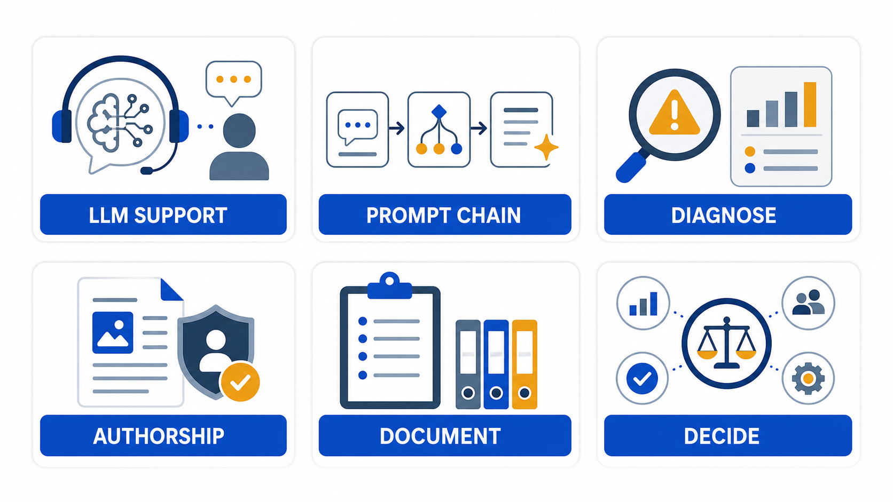
- Explain how a large language model can support AI image-generation workflows without replacing human creative judgment.
- Distinguish between creative intention, natural language description, visual concept, and technical image prompt.
- Use an LLM to generate visual directions, refine prompts, and translate abstract briefs into concrete image-generation instructions.
- Apply prompt chaining as a systematic method for moving from idea to visual output.
- Use an LLM to diagnose image-generation failures and propose targeted prompt revisions.
- Recognize common risks, including generic output, overloaded prompts, weak authorship, and ignored tool limitations.
- Maintain human authorship, ethical awareness, and critical judgment.
- Document the process from initial brief to final prompt, generated result, failure analysis, and revision.
Lesson Map: From Brief to Copilot-Assisted Workflow
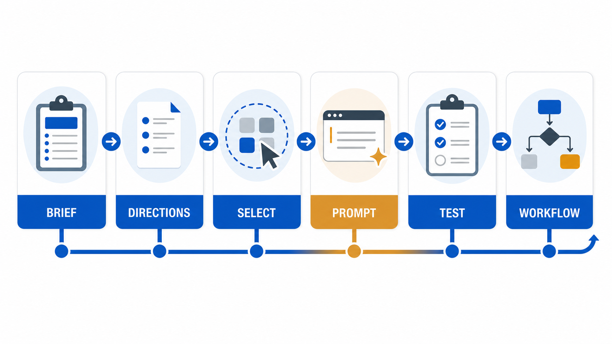
| Mission | Interaction type | Main skill |
|---|---|---|
| 1. Copilot mission brief | Orientation + readiness check | Understand the LLM as assistant, not author. |
| 2. Copilot, not pilot | Gap-fill + card sort | Separate LLM support tasks from human responsibilities. |
| 3. Brief vs prompt | Matching + gap-fill | Distinguish creative brief, visual direction, and technical prompt. |
| 4. Visual direction generator | Scenario + selection matrix | Ask for multiple directions and choose critically. |
| 5. Template toolkit | Flashcards + matching | Use reusable LLM prompts. |
| 6. Prompt chaining | Sequencing | Arrange the workflow from brief to documentation. |
| 7. Failure diagnosis | Evidence table + prompt writing | Use the LLM without outsourcing judgment. |
| 8. Human authorship | Reflection + decision cards | Explain accepted, rejected, and revised AI suggestions. |
| 9. Final Boss | Mini project | Produce and present an LLM-assisted prompt chain. |
The LLM as Copilot, Not Pilot
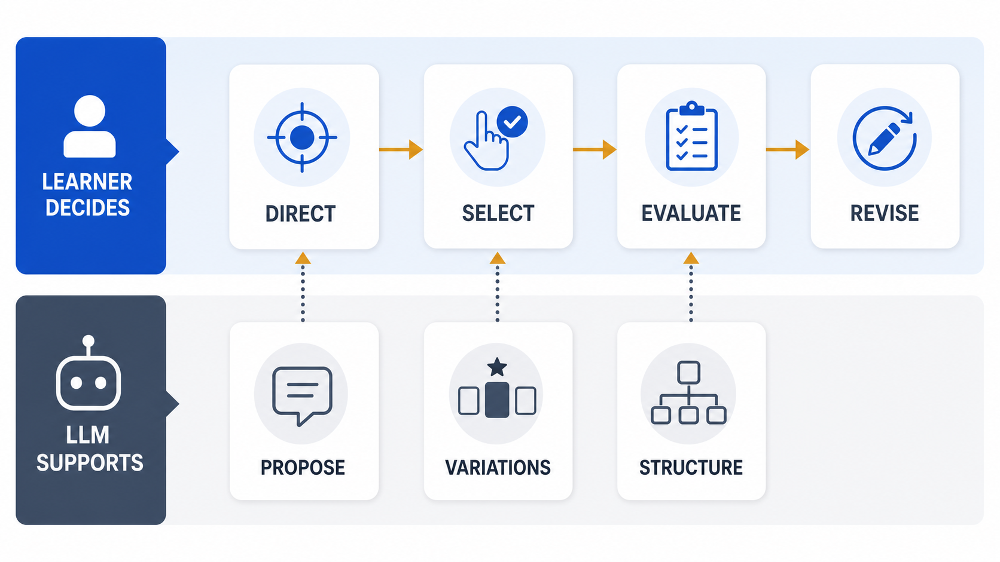
A large language model can help you think through a brief, generate visual concepts, structure an image prompt, analyze failure, and plan revisions. However, the learner remains the creative director.
Mini-Interaction: Who Does What?
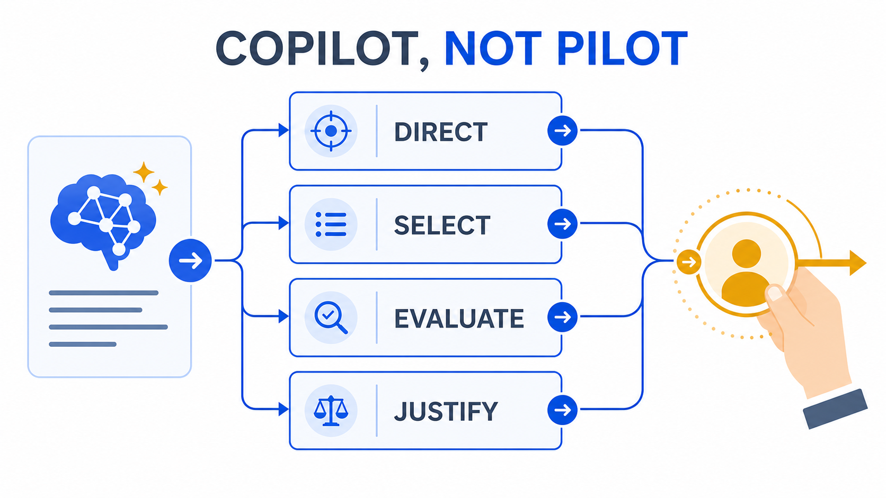
Sort each task into two zones: LLM can support or human must decide. Some LLM-supported tasks still require human review.
| Task card | Correct zone | Immediate feedback |
|---|---|---|
| Generate three visual directions from a brief. | LLM can support | The LLM can propose options, but the learner must choose and adapt them. |
| Define the central creative intention of the project. | Human must decide | The LLM cannot know the purpose, values, audience, or personal direction unless the learner defines them. |
| Suggest prompt vocabulary for lighting and composition. | LLM can support | Useful for expanding visual language, but suggestions must be checked for fit. |
| Decide whether the image is ethically appropriate to publish. | Human must decide | Responsibility, consent, risk, and context remain under human judgment. |
| Diagnose possible causes of fake text or overloaded composition. | LLM can support | The LLM can help analyze evidence when the learner describes the output clearly. |
| Select the final image for critique or portfolio use. | Human must decide | Selection involves authorship, purpose, aesthetic judgment, and accountability. |
From Creative Brief to Technical Image Prompt
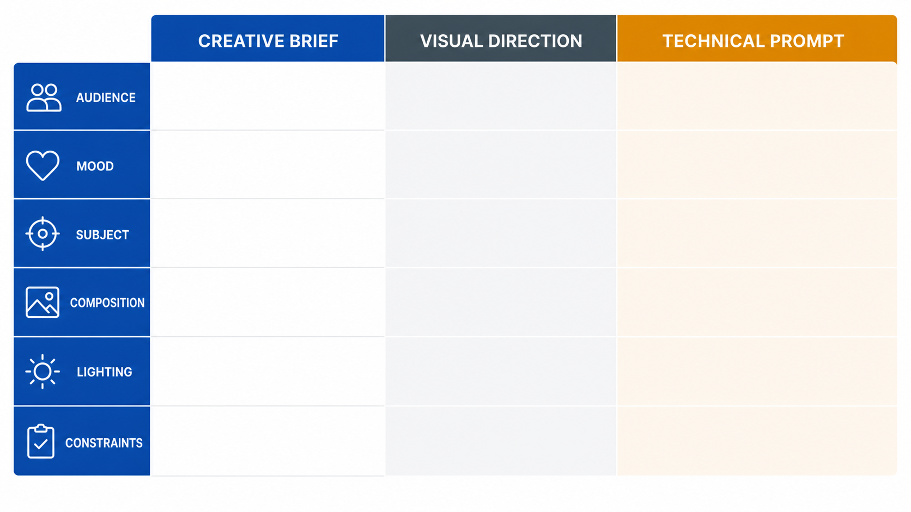
A creative brief defines the communication problem: purpose, audience, tone, or concept. A technical prompt translates that brief into visible instructions. Between them sits the visual direction: one possible way to represent the brief.
| Layer | Student-facing definition | Example |
|---|---|---|
| Creative intention | The learner’s idea, purpose, value, or message. | I want to show that AI can support creativity without replacing the human role. |
| Creative brief | A short description of the visual problem, audience, tone, or concept. | Create an image about responsible creative collaboration between humans and artificial intelligence for university students. |
| Visual direction | One concrete way to represent the brief visually. | A realistic university studio scene where students review AI-generated images around a table. |
| Technical image prompt | A structured image-generation instruction for the tool. | A realistic photograph of four design students reviewing AI-generated image previews around a studio table, warm natural light, medium-wide shot, no text, no logos. |
Activity: From Ambiguous Brief to Visual Directions
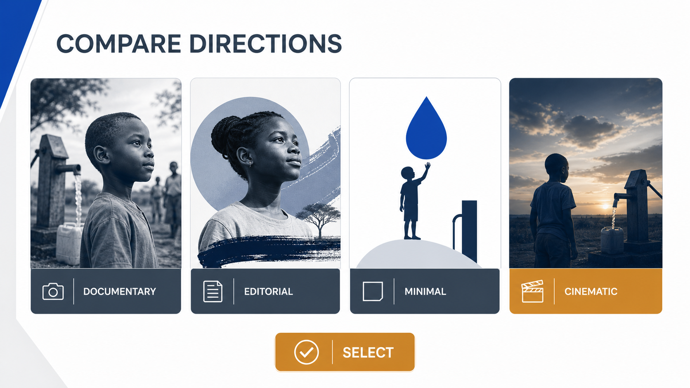
Start with the brief below. Ask the LLM for three distinct visual concepts. Do not ask for one perfect prompt yet.
| Visual concept | Subject + setting | Style + lighting | Possible cliché or risk | Fit 1-5 |
|---|---|---|---|---|
| Concept A | ||||
| Concept B | ||||
| Concept C |
Activity: Direction Quality Radar
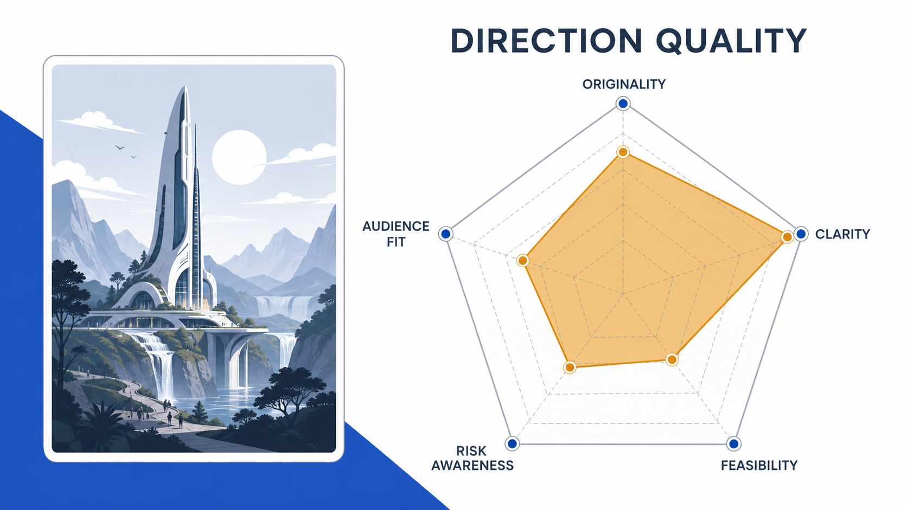
Rate each selected visual direction. Choose one with the best balance of originality, feasibility, responsible use, and alignment with the brief.
| Criterion | Question | Score 1-5 | Evidence |
|---|---|---|---|
| Originality | Does it avoid obvious AI clichés? | ||
| Visual clarity | Can you clearly imagine subject, setting, style, and composition? | ||
| Feasibility | Can an image-generation tool reasonably attempt it? | ||
| Risk awareness | Does it avoid brands, living artists, identity misuse, or stereotypes? | ||
| Audience fit | Does it suit university learners and the course topic? |
| Selected direction | Why selected? | Rejected direction | Why rejected? |
|---|---|---|---|
LLM Prompt Templates as Reusable Tools
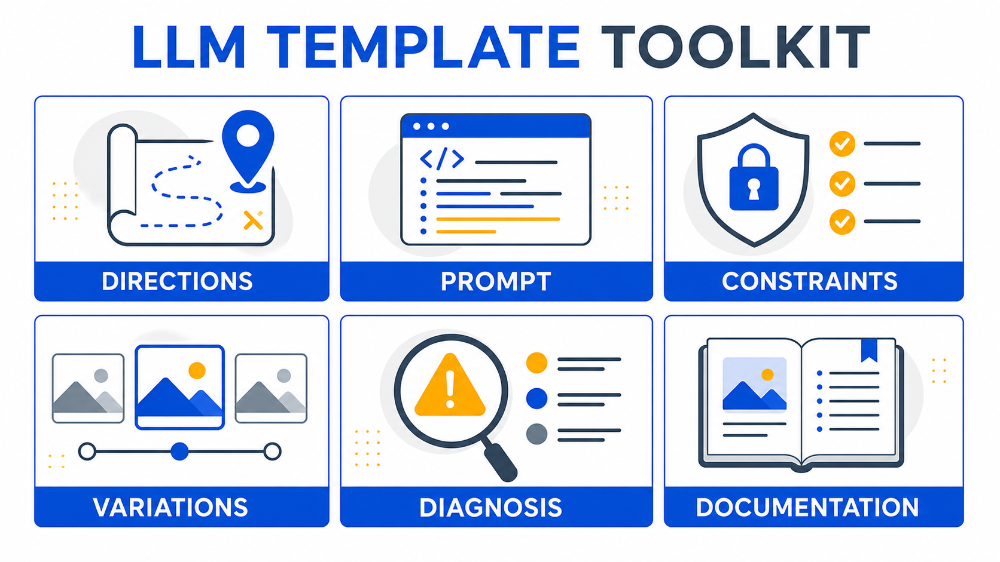
Prompt templates help learners use LLMs systematically. A useful template names the role, task, output structure, constraints, and evaluation criteria. Templates should be adapted, not copied blindly.
Creative-to-Technical Prompt Translation
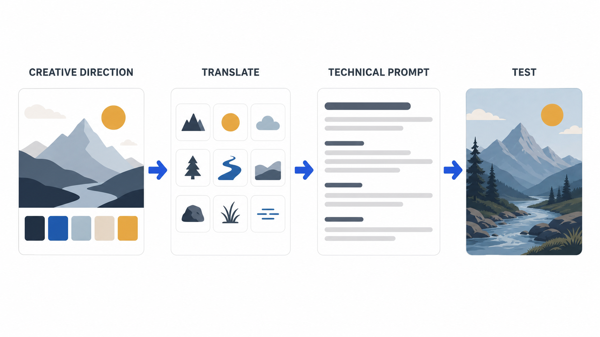
Once a direction is selected, the LLM can help translate it into a technical image prompt. The learner then edits the result to remove unnecessary adjectives, contradictions, brand names, living-artist references, and requests for readable text.
| Prompt component | LLM draft content | Your edited version |
|---|---|---|
| Subject | ||
| Context | ||
| Style | ||
| Composition | ||
| Lighting | ||
| Camera language | ||
| Mood | ||
| Technical constraints | ||
| Negative prompt / avoid list |
Mini-Interaction: Constraint Check
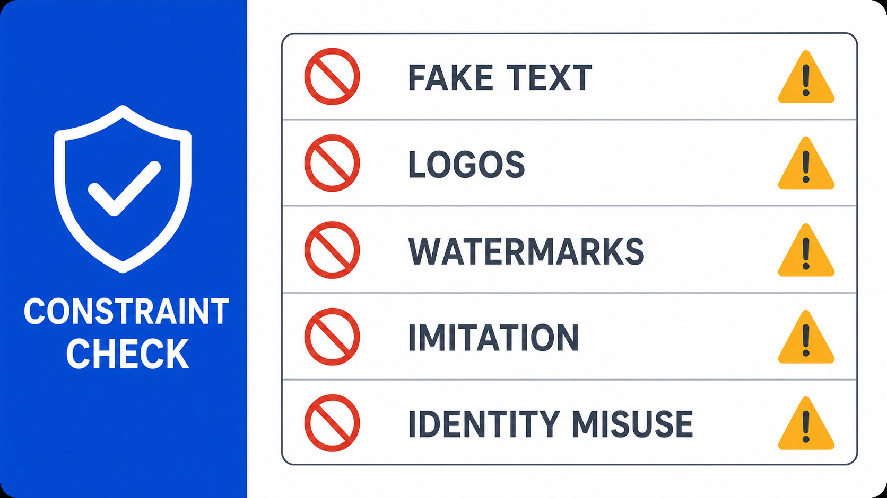
Select constraints that fit your planned image before generating.
| Constraint | Use when... | Select |
|---|---|---|
| no readable text | The design will need precise typography added manually. | ☐ |
| no logos | The image should avoid brand-like or protected marks. | ☐ |
| no watermark | The output should avoid watermark-like artifacts. | ☐ |
| large empty space for typography | The image is a poster or slide background. | ☐ |
| no imitation of living artists | The visual direction risks copying a living creator’s style. | ☐ |
| fictional people only | The image could be mistaken for a real person or documentary evidence. | ☐ |
Short answer: Which two constraints are most important for your concept, and why?
Prompt Chaining and Systematic Iteration
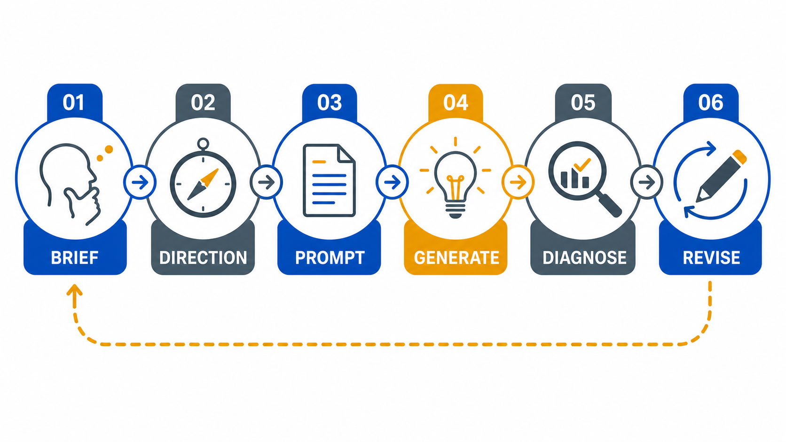
Prompt chaining means developing a prompt through linked stages rather than trying to produce the perfect instruction immediately. Each stage has a purpose: clarify, generate options, select, test, diagnose, revise, and document.
| Stage card | Correct order | Why it comes here |
|---|---|---|
| Initial creative brief | 1 | The project begins with purpose, audience, and concept. |
| Ask LLM for multiple visual concepts | 2 | Options prevent the first idea from becoming the only idea. |
| Select and justify one direction | 3 | Human judgment chooses the most appropriate direction. |
| Convert direction into technical prompt | 4 | The selected direction becomes image-generator language. |
| Generate first image | 5 | The prompt is tested visually. |
| Observe strengths and problems | 6 | The learner gathers evidence before revising. |
| Ask LLM for targeted diagnosis | 7 | The LLM uses evidence to suggest revisions. |
| Revise one main variable | 8 | Controlled iteration avoids random changes. |
| Generate or plan second version | 9 | The revision is tested or prepared. |
| Document final decision | 10 | The process becomes explainable and assessable. |
Failure Analysis with an LLM
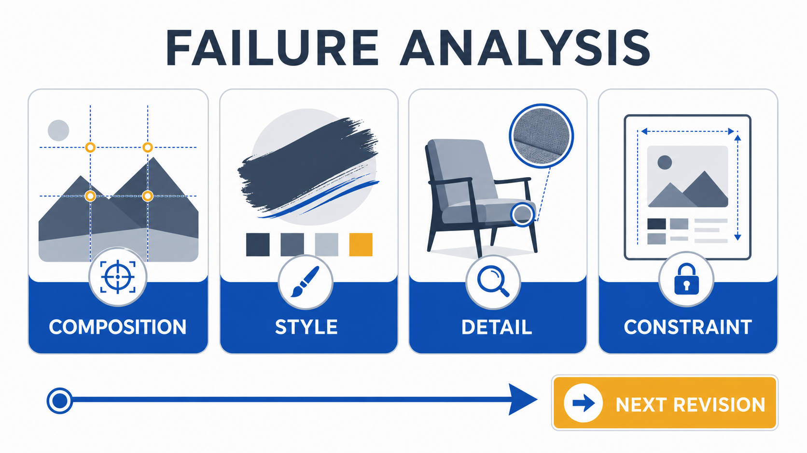
An LLM is useful after a failed image only if the learner provides evidence. “Make it better” is weak because it does not explain what failed, what worked, what should be preserved, or what kind of revision is needed.
| Strengths to preserve | Problems to solve | LLM diagnosis summary | Revision selected | Reason |
|---|---|---|---|---|
Activity: One Variable Revision Decision
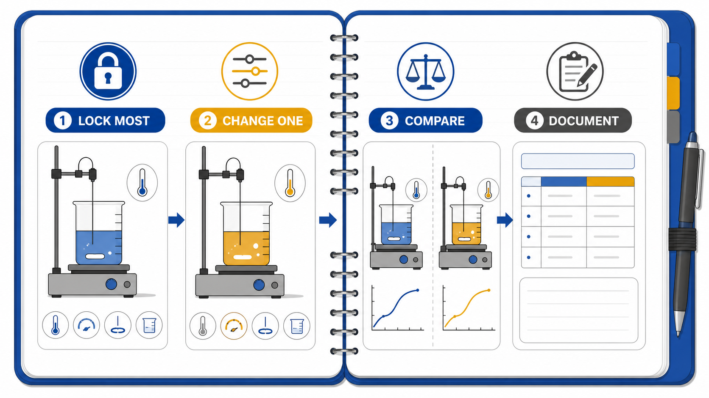
Choose the best single variable to change in each failure scenario.
| Observed problem | Best variable to revise | Feedback |
|---|---|---|
| The image is too crowded and the subject is lost. | Composition | Change framing, negative space, or number of elements before changing style. |
| The image feels too cold and technical for a collaborative brief. | Lighting / mood | Change light quality and mood language while keeping subject and setting stable. |
| The result is an illustration but the brief needs a documentary look. | Style | Change style or medium to realistic or editorial photography. |
| The output contains fake letters and logo-like marks. | Constraint / workflow | Add no text/no logos and consider adding typography manually. |
| The LLM prompt includes too many symbols. | Simplification | Remove competing symbols and focus on one visual metaphor or real scene. |
Risks: Generic Output, Overload, Weak Authorship, and Tool Limits
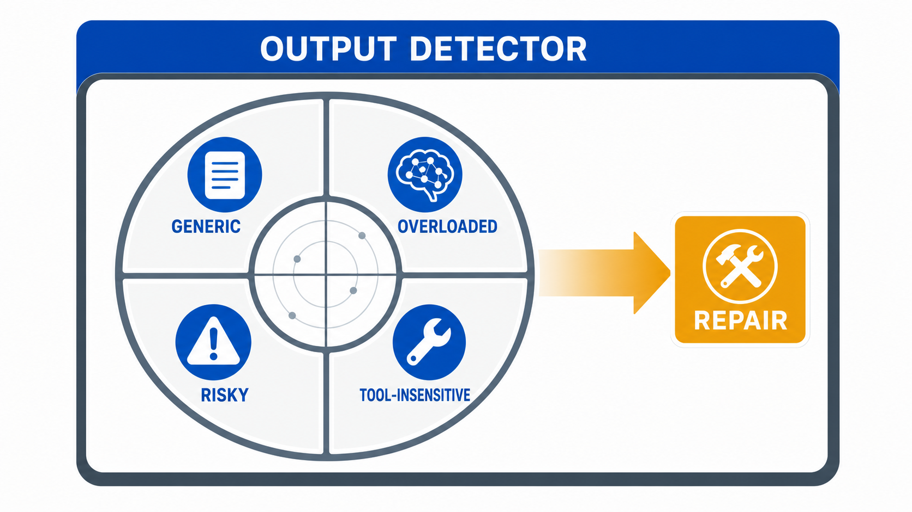
LLMs can produce fluent prompts that sound professional but are not necessarily useful. Learners must edit and document LLM assistance.
| LLM output problem | Problem type | Why it matters | Repair move |
|---|---|---|---|
| “Create a stunning futuristic AI masterpiece with glowing brains, robots, circuits, hands, city lights, and hyper-realistic cinematic beauty.” | Overloaded / generic | Too many symbols compete; output may be cliché or crowded. | Simplify to one scene, one subject, one visual metaphor. |
| “Make a poster with the full event title perfectly written in the image.” | Ignored tool limitation | Image models may create pseudo-text. | Generate background; add typography manually. |
| “Use the exact style of a famous living artist and a luxury brand aesthetic.” | Legal/ethical risk | Imitation and brand identity can create professional risk. | Describe visual qualities without names. |
| “This is the best prompt; use it without changes.” | Weak authorship | The learner must edit, test, and justify. | Add review step and state accepted/rejected changes. |
| “A CEO using AI in a boardroom.” | Default assumptions / bias risk | The model may reproduce stereotypes. | Specify context and representation intentionally when relevant. |
| Choose one weak LLM output | Problem type | Your repaired version | Why this is better |
|---|---|---|---|
Human Authorship Checkpoint
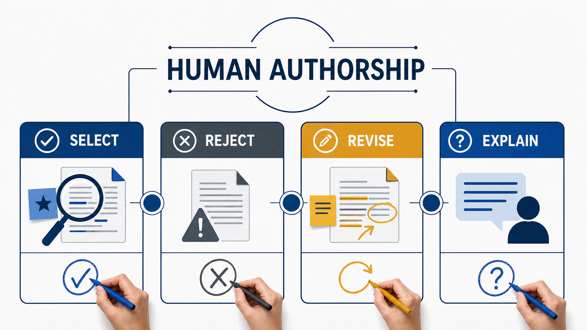
Review the LLM suggestions from your workflow. Complete the decision log. This is where your authorship becomes visible.
| LLM suggestion | Accepted / rejected / revised | Reason | Human decision |
|---|---|---|---|
| Visual concept | |||
| Subject or setting | |||
| Style or lighting | |||
| Negative prompt terms | |||
| Ethical or legal warning | |||
| Revision advice |
Final Boss: Responsible Creative Collaboration
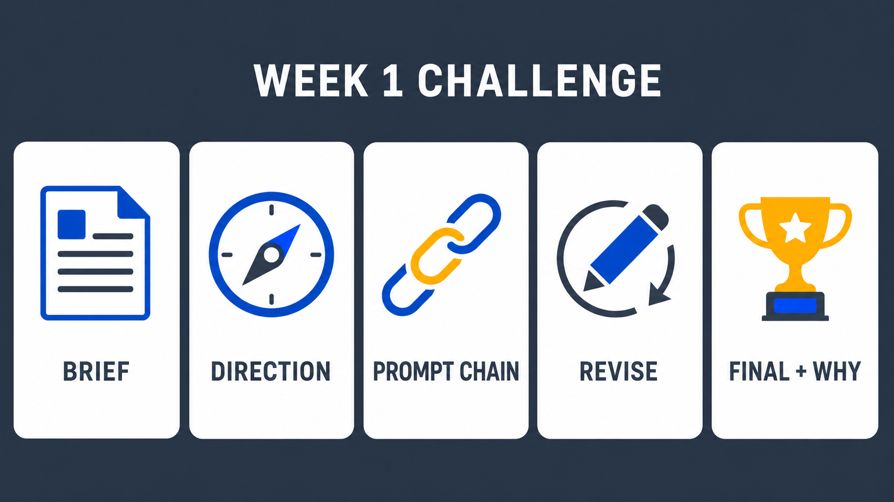
| Part | Required learner action | Submission evidence |
|---|---|---|
| A. Generate directions | Ask the LLM for three visual concepts with subject, setting, style, lighting, composition, mood, and risks to avoid. | Three concept notes. |
| B. Select one concept | Choose one concept and justify why it fits the brief and audience. | Selection rationale. |
| C. Build technical prompt | Convert the concept into a positive prompt and negative prompt, then edit manually. | Final prompt pair. |
| D. Generate or simulate result | Generate an image if a tool is available, or describe expected output if not. | Image/screenshot or expected-output notes. |
| E. Diagnose and revise | Use LLM-assisted failure analysis and select one revision. | Failure analysis + revised prompt. |
| F. Document authorship | Explain what the LLM contributed and what remained human. | Process explanation. |
Final prompt pair
| Final positive prompt | Negative prompt / avoid list |
|---|---|
| First result strengths | First result problems | Revision selected | Why this revision? |
|---|---|---|---|
60-second presentation script
Prompt Chain Documentation
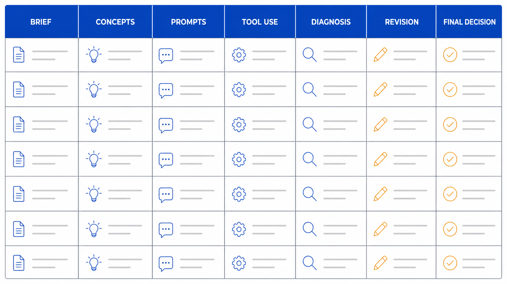
Documentation makes authorship, reasoning, and tool use visible. Complete this log for your final challenge or for one practice activity.
| Stage | Prompting / documentation question | Your notes |
|---|---|---|
| Initial brief | What is the visual problem or concept? | |
| LLM visual concepts | Which directions did the LLM propose? | |
| Selected direction | Which direction did you choose and why? | |
| Technical prompt | What image-generation prompt did you test? | |
| Tool used | Which image-generation tool and visible settings were used? | |
| First result strengths | What worked in the first image? | |
| First result problems | What failed or felt mismatched? | |
| LLM diagnosis | What did the LLM suggest and what did you reject? | |
| Revised prompt | What did you change? | |
| Final decision | Why is this version stronger? |
Final Assessment
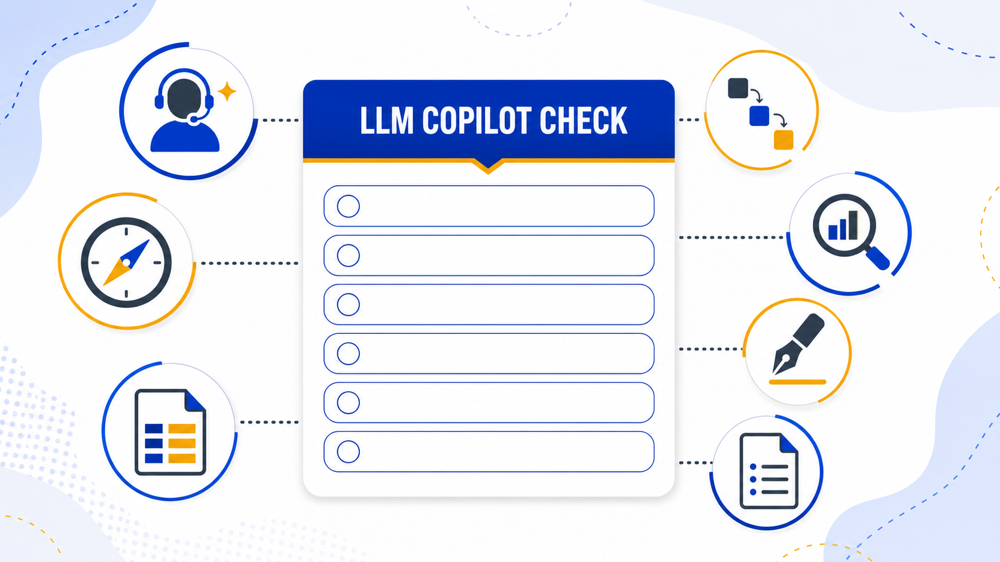
Complete the knowledge check. The LMS score is based on the automatic multiple-choice and true/false items. Short answers are included for reflection and practice.
Exit Ticket and Lesson Summary
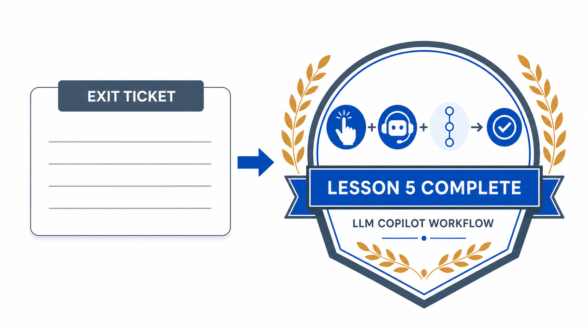
LLMs can be valuable copilots in AI image-generation workflows. They can help transform ambiguous briefs into visual directions, convert concepts into structured prompts, diagnose failures, create controlled variations, and document reasoning. Their limitation is that they do not replace visual judgment, authorship, ethics, or production decisions.
| Prompt | Your answer |
|---|---|
| One useful way an LLM can support my image-generation process is... | |
| One decision that must remain human is... | |
| One risk of accepting the first LLM prompt is... | |
| One thing I will document in my prompt chain is... |
| Task | Complete |
|---|---|
| Completed the Copilot, Not Pilot responsibility sort. | ☐ |
| Completed at least three gap-fill activities. | ☐ |
| Matched brief, direction, and prompt examples. | ☐ |
| Generated or drafted three LLM-assisted visual directions. | ☐ |
| Rated and selected one visual direction with justification. | ☐ |
| Converted one direction into a technical image prompt. | ☐ |
| Completed the prompt chain sequencing task. | ☐ |
| Wrote an evidence-based LLM failure-analysis prompt. | ☐ |
| Identified at least one generic or overloaded LLM output risk. | ☐ |
| Completed the Human Authorship Checkpoint. | ☐ |
| Completed the Final Boss challenge or planning template. | ☐ |
| Completed the exit ticket. | ☐ |